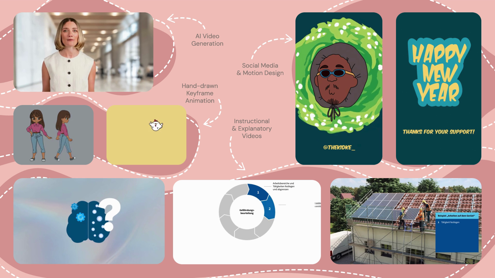
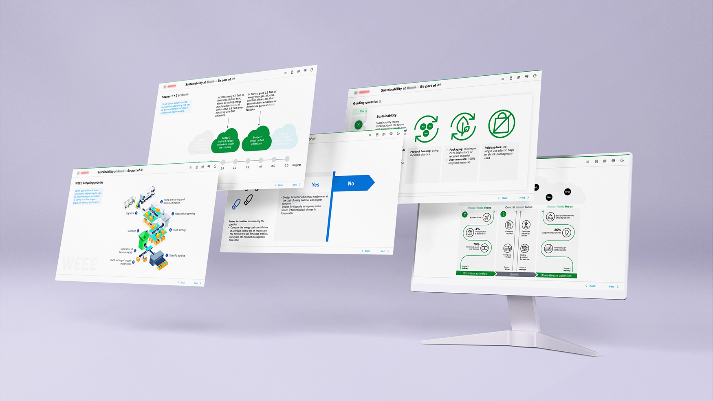

Ich bin eine Designerin & Illustratorin mit einer Leidenschaft für E‑Learning, Character Design und visuelle Konzepte, die wirken.

Über mich
Ich bringe Ideen visuell zum Leben – von verspielten Charakteren bis hin zu durchdachten Lernkonzepten. Meine Arbeit verbindet Ästhetik mit Funktion.
Mit Erfahrung in Grafik, Illustration und Instructional Design helfe ich Unternehmen und Kreativen, ihre Geschichten auf einzigartige Weise zu erzählen.
Ausgewählte Arbeiten
 Vergrößern 🡢
Vergrößern 🡢

Vergrößern 🡢
Vergrößern 🡢 Vergrößern 🡢
Vergrößern 🡢
 Vergrößern 🡢
Vergrößern 🡢
Was ich mitbringe
Sag Hallo